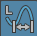

显示参数值
- 选择“创建 > 测量工具 > 参数工具”(Create > Measure Tools > Parameter Tool)。“参数工具”(Parameter tool)图标 显示在工具箱(Tool Box)的“上次使用的工具”(Last Used Tool)区域中。
- 单击曲线或曲面并拖动即可显示参数值。
释放鼠标按键可以创建参数定位器。
显示弧长
- 选择“创建 > 测量工具 > 弧长工具”(Create > Measure Tools > Arc Length Tool)。“弧长工具”(Arc length tool)图标  显示在工具箱(Tool Box)的“上次使用的工具”(Last Used Tool)区域中。
- 单击曲线或曲面并拖动即可显示从曲线开始处或从曲面 (0,0) 角点开始的弧长。
释放鼠标按键可以创建弧长定位器。